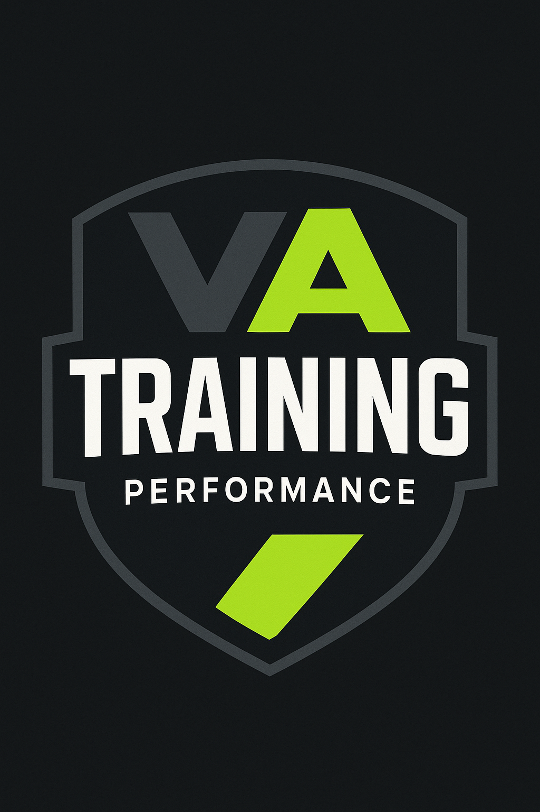

Exercício físico, saúde e performance
com acompanhamento científico.
A VA Training é um estúdio especializado em treinamento individualizado, avaliação física e fisiológica, prevenção de lesões, reabilitação e acompanhamento de atletas e pessoas que buscam mais saúde e qualidade de vida.
Ciência, experiência e
atendimento individualizado
A VA Training une ciência, experiência prática e atendimento individualizado para entregar programas de exercício físico voltados à saúde, prevenção, reabilitação e performance.
Fundada por um mestre e doutorando em Ciências da Saúde com mais de 20 anos de experiência e atuação em clubes de futebol no Brasil e no Japão, o estúdio carrega uma base acadêmica sólida aplicada ao dia a dia de cada aluno.
"Um estúdio especializado na aplicação de exercícios físicos para prevenção e tratamento de doenças crônicas."
Direcionamento Clínico
Protocolos adaptados para patologias como diabetes, hipertensão e cardiopatologias.
Base Científica
Prescrições fundamentadas em evidências com rigor acadêmico e prática clínica.
Alta Performance
Acompanhamento fisiológico especializado para atletas amadores e profissionais.
Atendemos pessoas com
diferentes objetivos
De atletas profissionais a pessoas que buscam mais saúde no dia a dia — cada atendimento é construído para o perfil e o objetivo de quem chega até nós.
Doenças crônicas
Diabetes, hipertensão, cardiopatologias e outras condições clínicas que se beneficiam do exercício orientado.
Reabilitação
Pessoas em recuperação pós-lesão que precisam de retorno seguro, progressivo e supervisionado.
Qualidade de vida
Pessoas que buscam mais disposição, saúde e bem-estar com segurança e acompanhamento profissional.
Atletas amadores
Quem pratica esporte por prazer e quer melhorar performance, técnica e resistência com método.
Atletas profissionais
Acompanhamento fisiológico de alto nível para atletas que precisam de dados e precisão na preparação.
Corredores de rua
Treinamento, prevenção de lesões e prescrição específica para corridas e modalidades de endurance.
Crianças e adultos
Atendimento em todas as faixas etárias com protocolos adaptados a cada fase da vida.
Treinamento seguro
Quem quer exercitar-se com segurança, ciência e acompanhamento individualizado, sem riscos.
Soluções completas em
saúde e performance
Treinamento para saúde e doenças crônicas
Exercícios prescritos e supervisionados para tratamento, controle e prevenção de condições clínicas.
- Diabetes e hipertensão
- Cardiopatologias
- Qualidade de vida e autonomia
- Envelhecimento ativo e saudável
- Condicionamento físico
Reabilitação e prevenção de lesões
Programas de retorno ao esporte e prevenção com acompanhamento fisiológico e progressão segura.
- Reabilitação pós-lesão
- Prevenção de lesões musculares e articulares
- Treinamento de força e mobilidade
- Exercícios específicos por modalidade esportiva
Prescrição online e treinamento remoto
Programas personalizados entregues remotamente para quem não pode comparecer ao estúdio.
- Musculação e fortalecimento
- Corrida de rua e endurance
- Prevenção específica por esporte
- Acompanhamento individualizado online
Por que escolher
a VA Training?
Prescrição baseada em ciência
Cada protocolo é fundamentado em evidências científicas atuais, não em métodos generalizados.
Acompanhamento individualizado
Nenhum aluno recebe o mesmo programa. Cada prescrição considera o histórico, o objetivo e a condição de saúde.
Experiência em alto rendimento
Atuação com clubes como EC Vitória, Chapecoense e Kashima Antlers traz rigor e excelência para todos os atendimentos.
Avaliações com dados objetivos
Usamos instrumentos validados — dinamômetros, bioimpedância, dobras cutâneas — para prescrever com precisão.
Relatórios personalizados
Cada avaliação gera relatórios detalhados com dados, interpretações e recomendações práticas.
Profissionais qualificados
Equipe com formação acadêmica sólida, experiência prática e atualização contínua.
Saúde e performance integradas
Atendemos do iniciante ao atleta profissional com a mesma atenção e rigor científico.
Atendimento para todos os objetivos
Da criança à pessoa idosa, da reabilitação ao alto rendimento, temos protocolo adequado para cada perfil.
Dados precisos para
melhores resultados
Realizamos avaliações físicas e fisiológicas completas para atletas amadores, atletas profissionais e para qualquer pessoa que queira conhecer melhor seu corpo e otimizar sua saúde.
Avaliação Corporal
- Dobras cutâneas
- Bioimpedância
- Composição corporal detalhada
- Análise de risco de sarcopenia
- Relatório com recomendações individualizadas
Avaliação de Força
- Dinamometria de membros superiores e inferiores
- Avaliação da força muscular por segmento
- Dados objetivos para prescrição
- Relatório com insights práticos
- Acompanhamento da evolução ao longo do tempo
Avaliação Fisiológica
- Testes personalizados por objetivo
- Acompanhamento de atletas amadores e profissionais
- Indicadores de performance e saúde
- Relatório completo com análise técnica
- Base científica para treinamento e reabilitação
Profissionais altamente qualificados
Valter Abrantes Pereira da Silva
Fundador & CEO · Fisiologista · Coordenador CientíficoMestre em Educação Física com Doutorado em andamento em Medicina e Saúde pela UFBA. Fisiologista e Coordenador Científico com atuação em clubes como Esporte Clube Vitória, Chapecoense e Kashima Antlers (Japão).
Referência em ciência da performance esportiva, reúne mais de 20 anos de experiência docente nas Ciências da Saúde com excelência em avaliação, reabilitação, saúde e alto rendimento.
Breno Barbetta Pereira da Silva
Assistente de FisiologiaBacharel em Educação Física pela Faculdade de Ciências e Tecnologias de Salvador. Atuou como estagiário no setor de Fisiologia/Sport Science do Esporte Clube Bahia (2022–2024) e como Analista de Dados das Categorias de Base (2024–2025.1).
Atualmente Assistente de Fisiologia do time profissional do Esporte Clube Bahia SAF.
Equipe de Professores
Nossa equipe de Professores está preparada para receber você com atenção, qualificação e comprometimento. Em breve, conheça o currículo completo de cada profissional.
Quer treinar com mais segurança,
ciência e individualidade?
Entre em contato com a VA Training e conheça o acompanhamento mais adequado para o seu objetivo. Não apresentamos valores por aqui — queremos entender o seu caso antes de qualquer coisa.
Empresarial Manoel Gomes Mendonça, Sala 9C
Pituba · Salvador · Bahia Ver no Google Maps